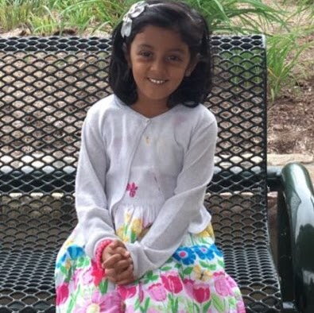

Hi! I'm Aishu!
Here Is Some Information About Me!
My Hobbies:
Playing Violin!
I like playing violin! I started to play Violin somewere at the end of 2019. So, now its 2021, and I have been playing violin for now a year.For the winter sing along in 3rd grade, the whole entire orcestra (including me and my violin) played jingle bells. In 4th grade, we had a virtual winter concert due to COVD-19. I think it was OUTSTANDING! We played jingle bell boogie, Sleigh ride in the park, and a russian winter! I wonder whats gonna happen with me and my violin in 5th, 6th, 7th, 8th, 9th, 10th, 11th, and 12th grade!